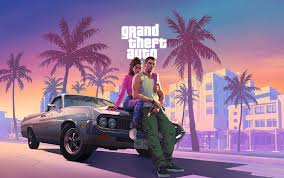

These are the collection of games which have their release date set and their trailers launched.

Grand Theft Auto VI
Rockstar Games
Release date: Yet to be announced
Add to wishlist
Easily the most widely-anticipated launch expected in 2025, Rockstar is returning to Vice City with a Bonnie and Clyde-inspired crime couple. So long as there aren't any delays, and there yet may be, this will be the biggest launch of the calendar year—but no PC release date has been announced.
Doom: The Dark Ages
id Software, Bethesda Softworks
Release Date: Yet to be announced
Add to wishlist
The next part of one of the most influential FPS series is yanking Doom guy back to a grim fantasy medieval-like prequel setting in The Dark Ages. With any luck, this will be the third great Doom game in a decade.
Civilization 7
Firaxis Games
Release Date: February 11, 2025
Add to wishlist
The next game in this foundational 4X series is bringing big changes to Civilization. This time Firaxis is focused on a "layered" approach to history with fewer, longer ages and morphing into a new civilization at the dawn of each age.
Avowed
Obsidian Entertainment
Release date: February 18, 2025
Add to wishlist
Obsidian's next major RPG is an open-world fantasy set in the Pillars of Eternity universe. Though Obsidian may not want everyone to call this its version of Skyrim, it sort of is. More importantly though, we think the differences make it compelling.
Monster Hunter Wilds
Capcom
Release Date: February 28, 2025
Add to wishlist
Wilds looks like it may be the cherry on top of a several year run of great Monster Hunter games. It looks like the evolution from Monster Hunter World that we were hoping for with a more responsive, simulated open world of monsters to hunt.